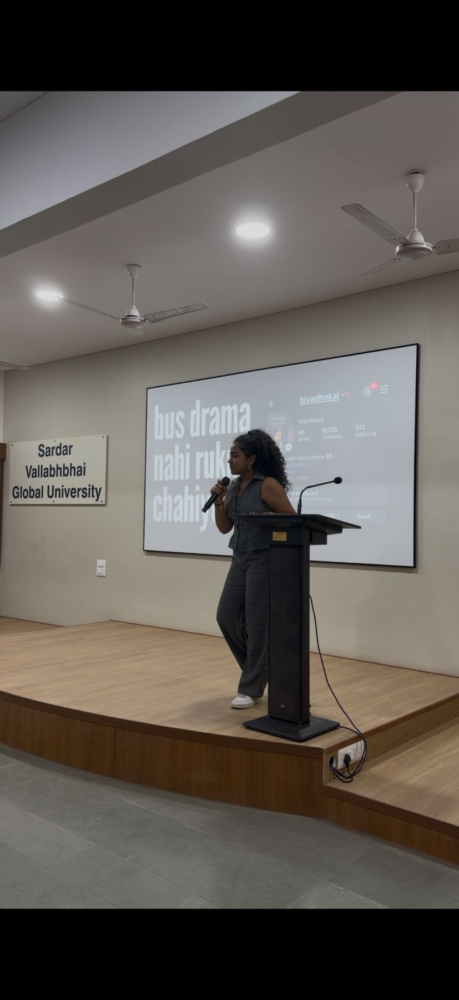
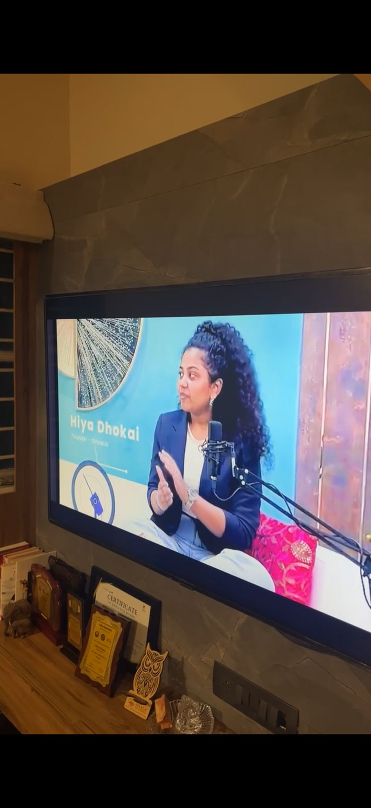
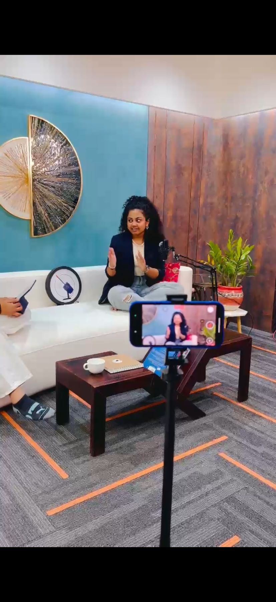

somewhere between a thought and a post...
The Content
Chapter.
I make things for the internet. Somehow, people stuck around.
What started as sharing ideas and experiences has grown into a community of 66,000+ on Instagram. I create around opportunities, student life, work, the things I'm learning and the occasional thought that refuses to stay in my notes app.
a camera roll with a point of view.



A LITTLE INTERNET CORNER
66,000+ people, and counting.
Turns out,
we had things to talk about.
I'm interested in making content that is useful without feeling like homework. That means sharing opportunities people might have missed, talking honestly about figuring out what's next, and turning things I've learnt along the way into something someone else can use.
It's part storytelling, part research, part showing up consistently. And very much still a work in progress.
FIND ME ON INSTAGRAM ↗A RECURRING INTERNET RABBIT HOLE
Career
Codes.
A series built around finding opportunities worth knowing about: internships, programmes, projects and other ways to get moving. The idea is simple: make the search a little less overwhelming and help more people find their next step.
good links should travel.
THERE'S ALWAYS ANOTHER STORY
See you
on the feed.
More ideas, more experiments, more things worth sharing. Come say hi.
FOLLOW ALONG ON INSTAGRAM ↗end of this scroll. not the story.